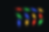
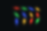
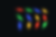
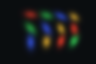
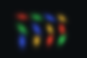
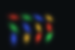
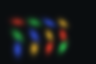
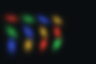

All PNGs use the same [0,1] display range. Error is absolute RGB error, not amplified. Metrics use float data. Val cameras never enter optimizer updates.
| View | Target | Prediction | Absolute error |
|---|---|---|---|
| 0 / train |  | ||
| 1 / val |  |  | |
| 2 / train |  | ||
| 3 / train |  | ||
| 4 / train |  |  | |
| 5 / val | |||
| 6 / train |  |